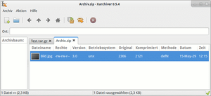
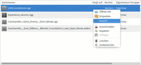
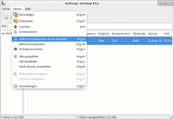
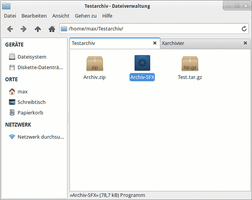
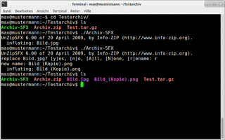

Xarchiver
Dieser Artikel wurde für die folgenden Ubuntu-Versionen getestet:
Ubuntu 14.04 Trusty Tahr
Zum Verständnis dieses Artikels sind folgende Seiten hilfreich:
Xarchiver  ist ein von Giuseppe Torelli entwickeltes und unter der GNU General Public License (GPL) herausgegebenes Programm zum Packen und Entpacken von Archivdateien. Mithilfe von Xarchiver können auch Dateien zu bestehenden Archiven hinzugefügt oder aus Archiven gelöscht werden. Das Programm ist unabhängig von der verwendeten Desktopoberfläche, basiert nur auf GTK2 und braucht sonst keine Extra-Pakete.
ist ein von Giuseppe Torelli entwickeltes und unter der GNU General Public License (GPL) herausgegebenes Programm zum Packen und Entpacken von Archivdateien. Mithilfe von Xarchiver können auch Dateien zu bestehenden Archiven hinzugefügt oder aus Archiven gelöscht werden. Das Programm ist unabhängig von der verwendeten Desktopoberfläche, basiert nur auf GTK2 und braucht sonst keine Extra-Pakete.
Übersicht über die wichtigsten Programm-Merkmale:
Besonderer Fokus auf Benutzerfreundlichkeit
Besonders schlank und ressourcenschonend im Betrieb
Arbeitet sehr schnell
Konzentriert sich auf die Hauptfunktionen und verzichtet auf zusätzliche Optionen
Einfache Bedienung per Drag'n'Drop möglich
Automatische Erkennung von passwortgeschützten Archiven (ZIP, RAR, ARJ, 7Z)
Zur Betrachtung von Textdateien innerhalb eines Archives wird kein externer Editor benötigt
Folgende Formate werden derzeit unterstützt: .bz2, .gz, .lzma, .tar, .tar.bz2, .tar.gz, .tar.lzma, .jar, .deb sowie .rpm. Passwortgeschützte Archive der Formate .zip, .7z, .arj und .rar werden ebenfalls unterstützt.
Xarchiver war lange Zeit Bestandteil von Xfce, inzwischen wurde aber die Bindung an Xfce aufgegeben.
Installation¶
 Das Programm ist in den offiziellen Paketquellen vorhanden. Folgendes Paket muss installiert [1] werden:
xarchiver (universe)
 mit apturl
mit apturl
Paketliste zum Kopieren:
sudo apt-get install xarchiver
sudo aptitude install xarchiver
Bei Ubuntu-Versionen, welche über ein Anwendungsmenü verfügen, kann das Programm über den Menü-Eintrag "Anwendungen -> Zubehör" aufgerufen werden [2]. Oder man startet es, indem man ein Archiv aus dem Dateimanager heraus öffnet.
Benutzung¶
Archiverstellung¶
Ein neues Archiv erstellt man über das Menü "Archiv -> New" oder die Plus-Schaltfläche in der Werkzeugleiste (alternativ Tastenkürzel Strg + N ). Über den erscheinenden Dialog können Dateien hinzugefügt und der Archivtyp festgelegt werden.

Öffnen und Entpacken eines Archivs¶
Ein Archiv öffnet man über das Menü "Archiv -> Open" oder die entsprechende Schaltfläche in der Werkzeugleiste (Tastenkürzel
Strg +
O ). Entpackt wird ein Archiv über das Menü "Aktion -> Entpacken" (
Strg +
E ). Bei Bedarf steht auch ein Kontextmenü zur Verfügung, welches über Klick mit der  -Maustaste erreicht werden kann und Schaltflächen zum Öffnen, Entpacken und dergl. beinhaltet.
-Maustaste erreicht werden kann und Schaltflächen zum Öffnen, Entpacken und dergl. beinhaltet.
Hinzufügen oder Löschen von Dateien¶
Dateien können über Menü "Aktion -> Hinzufügen" ( Strg + D ) oder über die entsprechende Schaltfläche in der Werkzeugleiste zu einem bereits bestehenden, geöffneten Archiv hinzugefügt oder eine markierte Datei per "Aktion -> Löschen" ( Strg + Entf ) aus einem Archiv entfernt werden.
Selbstextrahierende Archive¶
Im Menü "Aktion" findet sich ebenfalls die Möglichkeit, aus einem geöffneten Archiv ein selbstextrahierendes Archiv zu erstellen. Da nicht alle Archivformate dies unterstützen, ist bei manchen Formaten (z.B. .tar-Archive) diese Funktion deaktiviert. Nach Anwählen des Menüpunkts "Selbstextrahierendes Archiv erstellen" sind lediglich noch der Speicherort und der Name anzugeben, das Archiv wird anschließend vom Programm automatisch erstellt (z.B. testarchiv siehe beispielhafte Bildschirmfotos). Ein Entpacken eines solchen selbstextrahierenden Archivs erfolgt mittels des Befehls
./NAME_DES_SELBSTEXTRAHIERENDEN_ARCHIVS
im Terminal. Es sind keine weiteren Angaben mehr nötig; die Dateien werden automatisch entpackt. Falls im Arbeitsverzeichnis bereits Dateien desselben Namens existieren, fragt das Programm nach, wie es vorgehen soll, d.h. ob die zu entpackende Datei umbenannt, die bereits existierende Datei überschrieben werden soll und dergleichen.
|  |
| Selbstextr. Archiv erstellen |
|  |
| Selbstextr. Archiv angelegt |
|  |
| Selbstextr. Archiv entpacken |
Weitere Funktionen¶
Über das Menü "Aktion" besteht die Möglichkeit, einen Archivkommentar zu erstellen, einem Archiv ein Passwort zu vergeben oder zum Beispiel mehrere Archive auf einmal zu entpacken. Die Archiveigenschaften lassen sich über das Menü "Archiv" anzeigen oder als TXT- oder HTML-Datei exportieren.
Programmeinstellungen¶
Einige Programmeinstellungen wie zum Beispiel die Festlegung des bevorzugten Archivformats, der Symbolgröße, der Anzeige von Programmfensterelementen u.a. lassen sich über das Menü "Aktion -> Einstellungen" benutzerdefiniert festlegen.
Verwendung im Terminal¶
Xarchiver lässt sich auch auf der Konsole einfach verwenden [3]. Die grundlegende Syntax lautet:
xarchiver OPTION ARCHIV
Hierbei stehen dem Nutzer einige Optionen zur Verfügung.
| Übersicht über die Terminal-Optionen | ||
| Kurzform | Langform | Bedeutung |
-x | --extract-to=ZIELVERZEICHNIS ARCHIV | Extrahiert das ARCHIV in ein ZIELVERZEICHNIS und beendet darauf das Programm. |
-e | --extract=ARCHIV | Fragt nach dem Zielverzeichnis und extrahiert dann das ARCHIV dorthin; anschließend wird das Programm beendet. |
-m | --multi-extract=DATEI1 DATEI2 DATEI3 ... | Öffnet einen Multi-Extraktionsdialog, um mehrere Dateien auf einmal zu extrahieren. Platzhalter (wie z.B. *) sind erlaubt. |
-d | --add-to=DATEI1 DATEI2 DATEI3 ... | Fragt nach dem Zielarchiv und fügt dann die angegebenen DATEIEN diesem Archiv zu. Falls das angegebene Zielarchiv nicht existiert, wird es vom Programm angelegt. |
-a | --add=ARCHIV | Fragt nach den Dateien, welche dem angegebenen ARCHIV hinzugefügt werden sollen, und fügt diese dann hinzu. |
-h | --help | Zeigt einige Hilfeoptionen an. |
--help-all | Zeigt sämtliche Hilfeoptionen an. | |
-V | --version | Gibt Versionsinformationen aus und beendet dann das Programm. |
Problembehebung¶
Erst die in Ubuntu 14.04 enthaltene Version von Xarchiver ist in der Lage, mit .xz-Dateien umzugehen.
 Programmübersicht
Programmübersicht- Erstellt mit Inyoka
-
 2004 – 2017 ubuntuusers.de • Einige Rechte vorbehalten
2004 – 2017 ubuntuusers.de • Einige Rechte vorbehalten
Lizenz • Kontakt • Datenschutz • Impressum • Serverstatus -
Serverhousing gespendet von